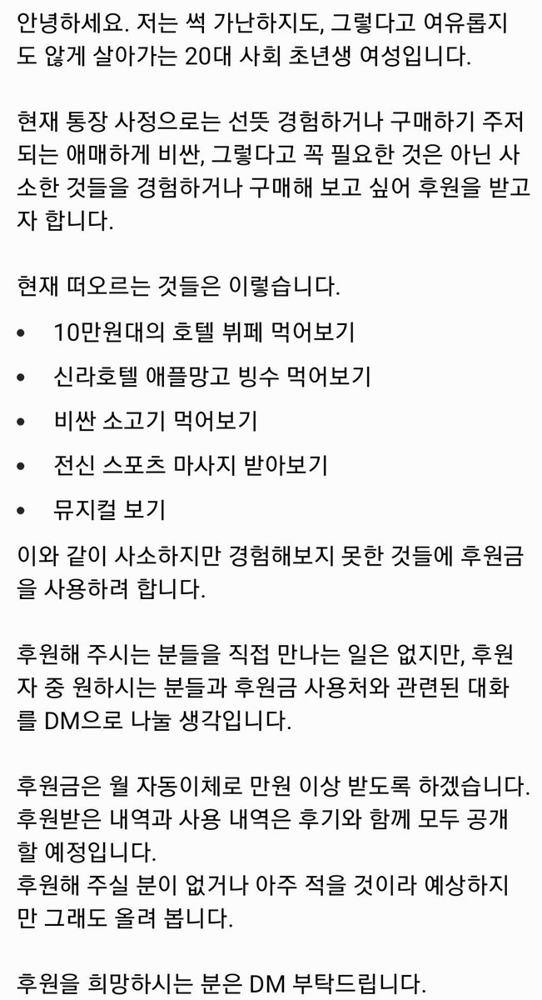

신라호텔의 망고빙수를 먹는 대신 같은 가격인 신라호텔 주식 1주를 구매하겠다는 트윗으로부터 발생된 플로우
| 해당 플로우는 2019년 11월 익명의 트위터 이용자가 올린 후원 요청에서 비롯되었다. 20대 사회 초년생 여성으로 자신을 소개한 이용자는 후원이 필요한 이유로 몇 품목을 열거하였는데, 해당 리스트에는 신라호텔 애플망고 빙수가 포함되어 있었다. |  | |
| 익명의 유저가 올린 후원 요청 |
트위터 이용자 (@NoChulsanNo)1 는 신라호텔 애플망고빙수 가격과 신라호텔 주식 1주당 가격이 비슷함을 지적하며 차라리 주식을 살 것을 권유하였다. 래디컬 페미니스트 계열 트위터 이용자들이 이후 주식 구매 및 수익률 인증을 통해 플로우를 이어나갔다.
소소한 수익인증~ 망고빙수 두 번 먹고도 남음 자이스2
그 후 일부 트위터리안들은 이러한 조언에 대해 “사람 할 짓이 아닌” 주식을 사회초년생에게 권하는 언니는 좋은 언니가 아니며, 차라리 “망고빙수를 사주며 몸에 비타민이라도 섭취시켜주”는 사람이 훨씬 좋은 언니라고 강하게 비난하였다.
2019년 11월 해당 플로우는 실시간 트렌드에 올랐다.